Meddbase comes with a fully integrated electronic pathology system that links directly with selected pathology labs, including HCA (Hospital Corporation of America) and TDL (The Doctors Lab). Request forms can be raised ad-hoc or during an appointment. If the appointment specifies tests (e.g. a health assessment may require a profile blood test) the lab form will pre-populate with required tests based on how you have configured the service.
Non-standard tests can be ordered and added to the list via the Meddbase service picker. The request form is automatically created by Meddbase through a template and contains all the patient information required, including a unique barcode that ensures complete accuracy when processing the tests.
When tests are completed, the lab automatically sends results back to Meddbase servers. Test results directly update the patient's medical record and your admin team or the requesting doctor are automatically notified in the system or via email.
Electronic Pathology is a system feature and additional set-up is required. If you do not currently use Electronic Pathology and would like to, please speak to your Account Manager.
This article aims to provide guidance on how to raise pathology requests and manage results in Meddbase.
When in an appointment, Meddbase will automatically create a pathology form based on the tests that have been added as services to the appointment. The list of tests currently associated with the appointment can be found at the top of the clinical form.
If the test you wish to request is not listed here, you must add it as a service.
If the same service is added twice, it will only be requested once.
Use the Add Service button located at the top left of the page and search for the test using the service picker. Once you have found the test, add it to your chosen services. The price and payer will be displayed. Be sure this information is correct. Once you have added the tests to the chosen services, hit proceed and this will take you back to the consultation.
Once back in the consultation, hit the Path Lab Request button located at the top left of the page. This will generate a lab request form based on the tests in the services list.
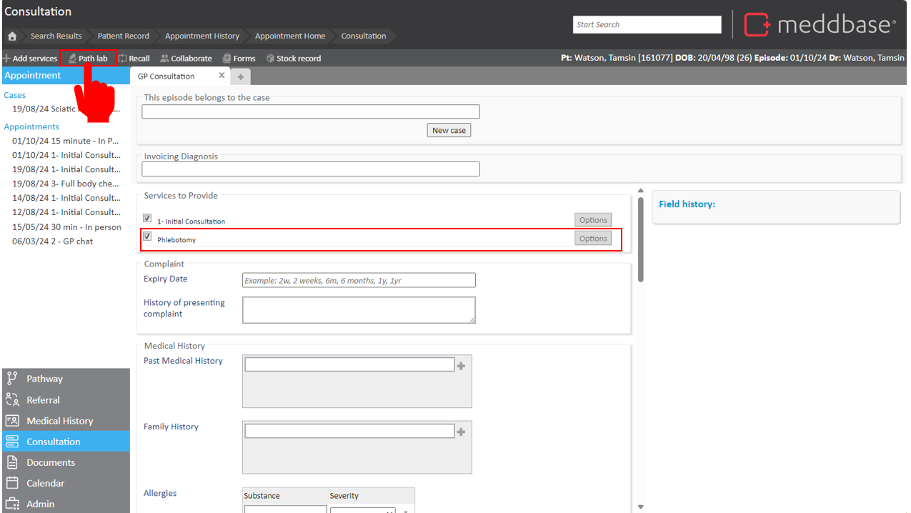
The Lab request form will also prompt you with a list of additional options to allow you to communicate with the Lab. Select the options you wish to set using the parameters section on the left of the page. As you change the parameters, the form will automatically update.
Once you have completed the form, click save and print. Meddbase will pop up a window prompting you to print out the lab form.
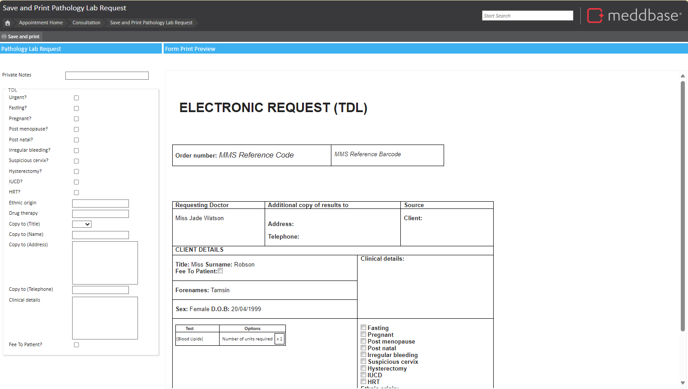
If the window does not pop up it will be because you have a pop-ups blocked. If this is the case hit the “print again” button and make sure for future requests you exclude the site *meddbase.com in your pop up blocker.
If you are a TDL customer, as soon as you hit save and print, an electronic request is automatically sent to the lab. You must also print out the hard copy and attach it to the sample as the lab will not process anything until they have this.
Once you have completed the request, click finish and you will return to the consultation page.
The video below demonstrates how to raise a request within an appointment:
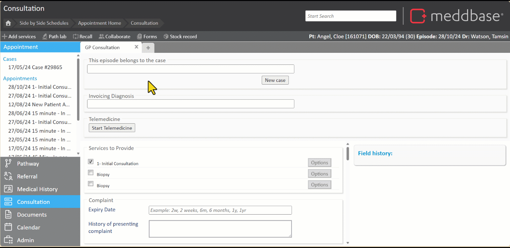
To request pathology directly from the patient record, click “Pathology Lab Request” from the actions menu on the patient home page.
This will take you to the service picker where you can search for and select your desired test.
After this, the same process as above is to be followed. Once you are happy with the form, click save and print. The form will be printed with all the patient details and a bar code. The Lab will use this bar code to reference you and reference the delivery of the results back to Meddbase. Please make sure this barcode prints correctly or it may result in a delay in the results.
The video below demonstrates how to raise a request from a patient record :
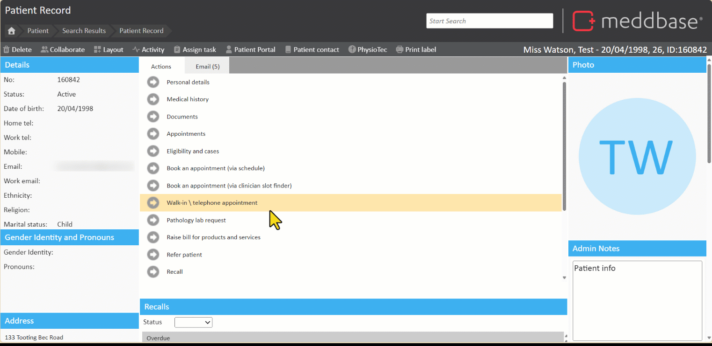
The availability of services shown in the service picker is dependent on the patient's preferred payer and the respective Charge Band.
Once you have raised your pathology request and printed the request form, you will need to Print a label to attach onto the specimen. To do this go to the Appointment Home or Patient Record page:
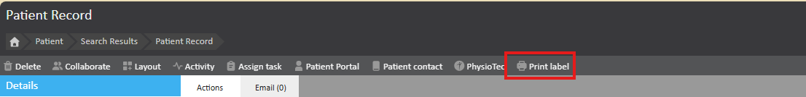
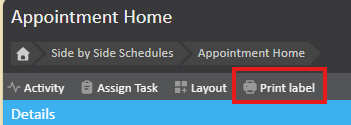
It is possible to also print the Label on the Pathology Work Item, after the request has been raised. If you would like to enable this feature, please reach out to the support team.
When new pathology results are received, they will appear in the Pathology Result Worklist under Work on the start page. Items in this inbox will require an action. In the Delegated Work section, the Pathology Results inbox enables you to monitor requested pathology* and pathology results.
To access the Pathology Results Worklist, you must belong to the Lab Results Administrator role group.
*Requested pathology can now create a work item within Delegated Work > Pathology Results as soon as it is raised, allowing you to monitor all pathology requests rather than waiting for results to be received. To enable automatic creation of work items for requested pathology, see Admin > Configuration > Pathology.
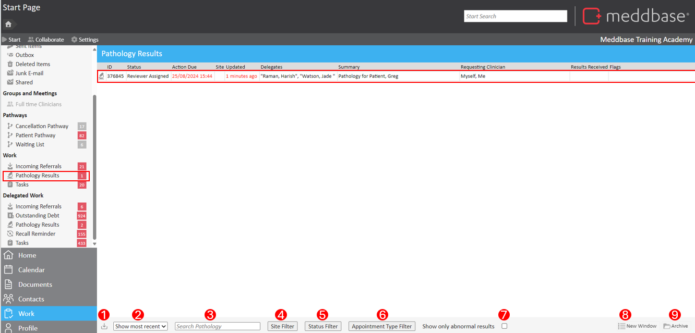
On this page, each row represents a result, while the columns provide a quick summary of key information for each pathology item.
At the bottom of this page, the following controls and filtering of the worklist are:
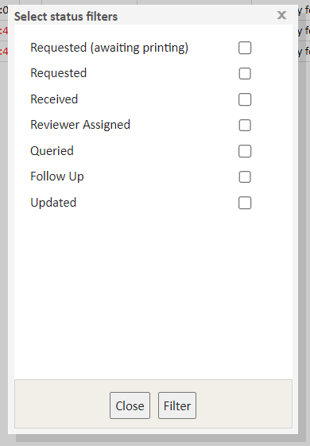
For better visibility, Abnormal results will be represented with a icon in the leftmost column.
*Warning Please note, any filters applied in the Pathology Work Item list will remain unless new filter options are applied. Users should check all filters and ensure that they are correctly configured to display all those worklist items which are relevant to them.
Clicking on a new pathology work item will allow you to process the result in a separate window. The user who requested the pathology test, will be the Assigned Reviewer and will be the one to receive the work item in their work inbox to review and action the results.
Users in the role Lab Results Administrator will have oversight of the result in the Delegated work inbox.
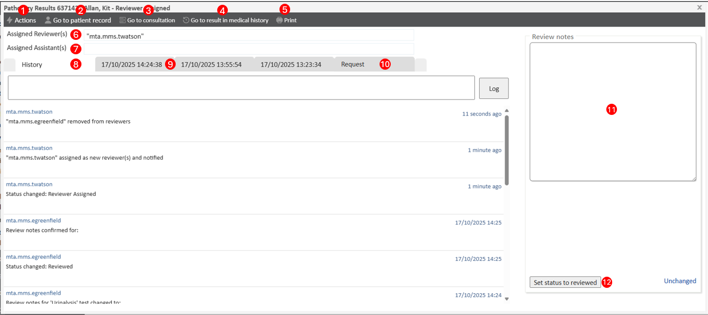
This window is the view of the Assigned Reviewer, they can do the following:
It is now possible to display the labs requested within the Pathology results window. This lists the names of the labs requested at the top of the results window. See Admin > Configuration > Pathology for more information.
When receiving electronic results from TDL or HCA labs, the actions available will differ depending on if the results are assigned to an individual user, or a role group. The actions are as follows :
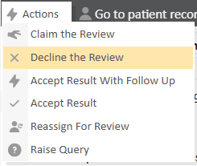
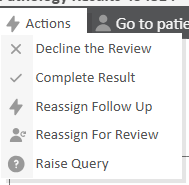
Once a result has been reviewed and completed, the work item window will change to the view below. Clicking save will complete the results process. These results can be Shared with the Patient via the portal by the tick box.
the work item will be archived and the results will be available on the Patient's Medical History. The results will be available as an event on the Medical Record, but also will populate Patient Data Fields.
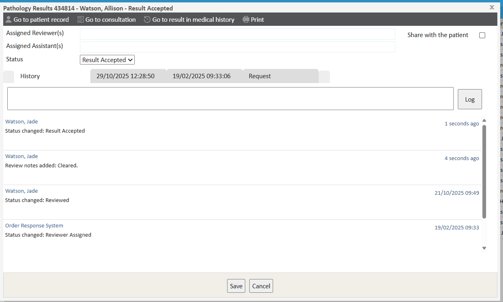